campus-selectionplatform-scene · 960 × 540
campus-personalplatform-scene · 960 × 540
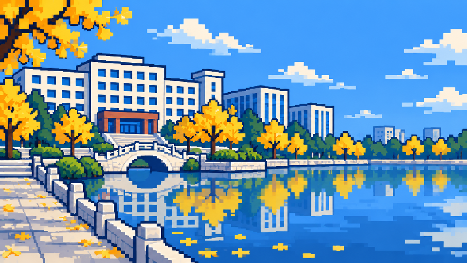
login-desktopplatform-scene · 960 × 540
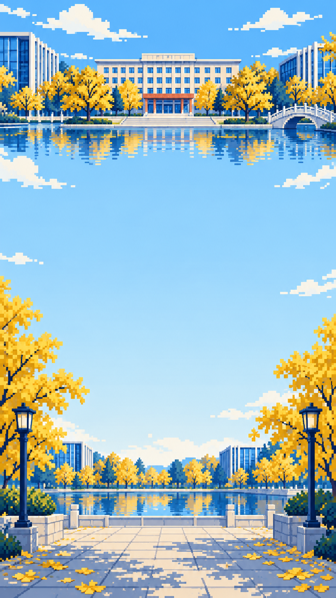
login-mobileplatform-scene · 960 × 1706
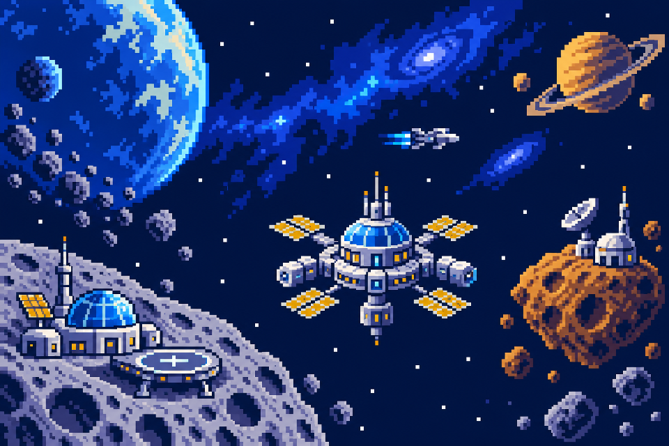
voyage-mapcourse-scene · 960 × 640
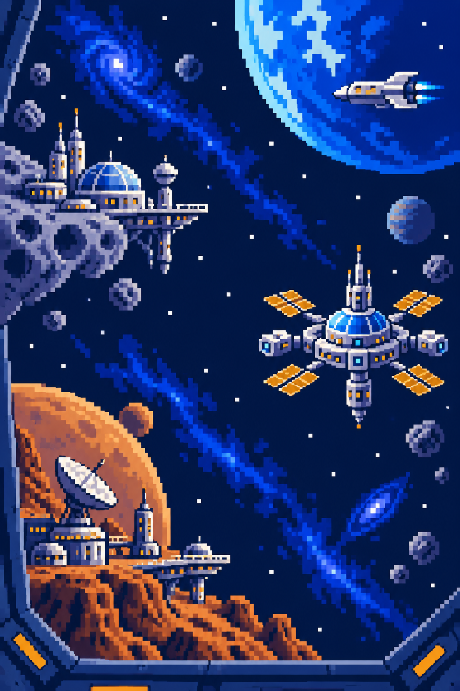
voyage-verticalcourse-scene · 960 × 1440
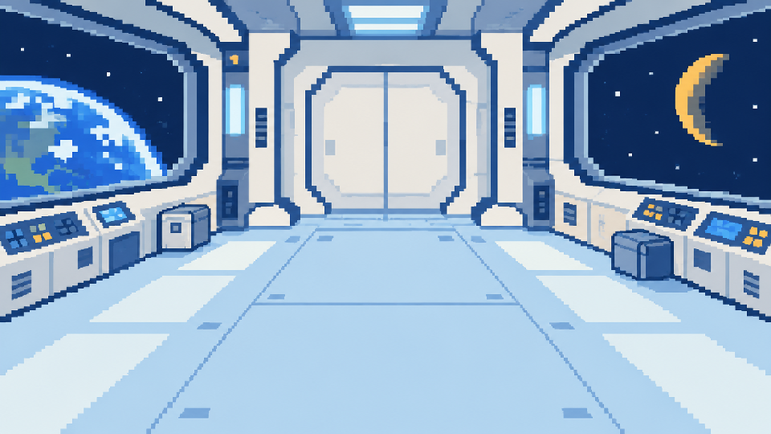
voyage-readingcourse-scene · 960 × 540
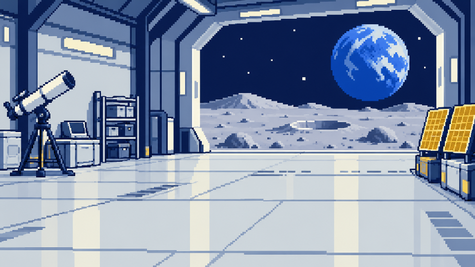
voyage-labcourse-scene · 960 × 540
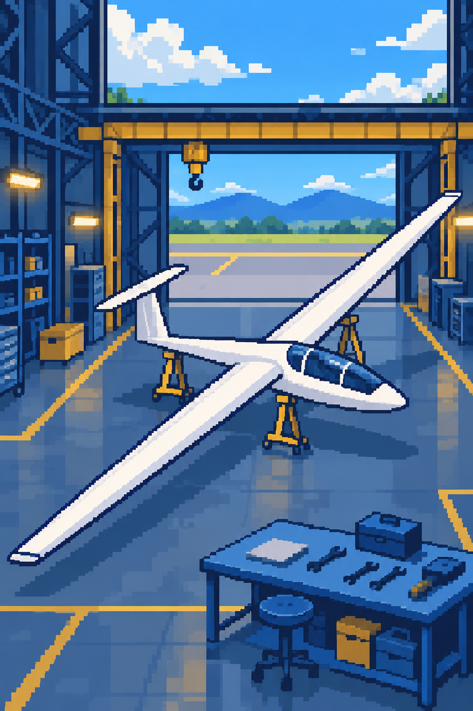
glider-coverexperiment-cover · 960 × 1440
level-vrlevel-sprite · 384 × 384
level-theorylevel-sprite · 384 × 384
level-gliderlevel-sprite · 384 × 384
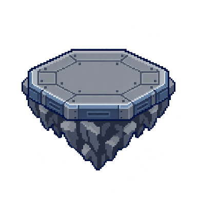
level-unknownlevel-sprite · 384 × 384
astronautcharacter-sprite · 192 × 192
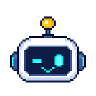
robot-winkassistant-sprite · 192 × 192
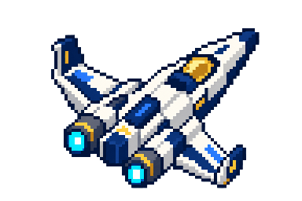
shipcourse-logo · 384 × 256
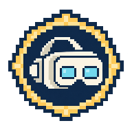
badge-vrbadge-sprite · 192 × 192
badge-theorybadge-sprite · 192 × 192
badge-gliderbadge-sprite · 192 × 192
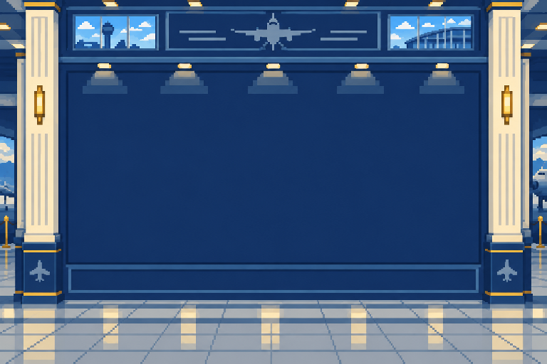
badge-roomplatform-scene · 768 × 512
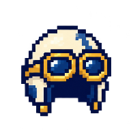
account-pilotaccount-avatar · 192 × 192
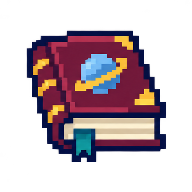
account-bookaccount-avatar · 192 × 192
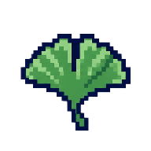
account-ginkgoaccount-avatar · 192 × 192
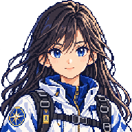
avatar-navigatorcourse-avatar · 192 × 192
avatar-pathfindercourse-avatar · 192 × 192
avatar-makercourse-avatar · 192 × 192
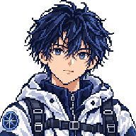
avatar-decodercourse-avatar · 192 × 192
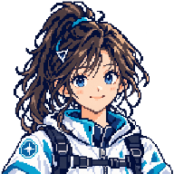
avatar-collaboratorcourse-avatar · 192 × 192
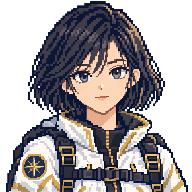
avatar-guardiancourse-avatar · 192 × 192